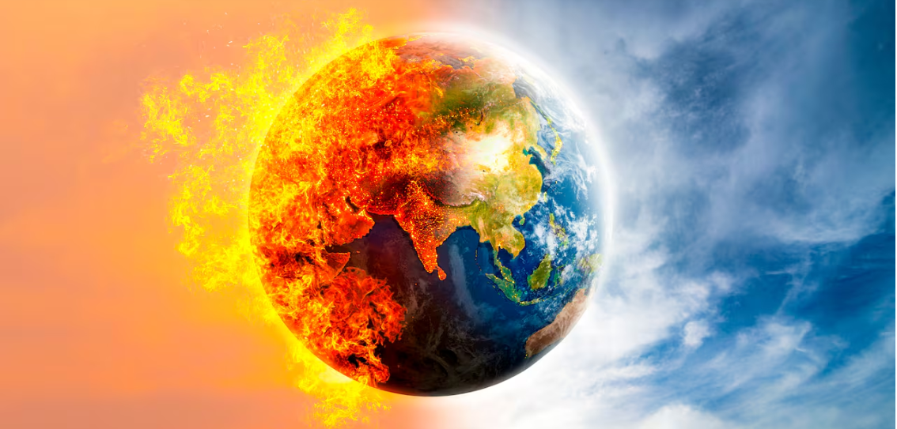

La quema de combustibles fósiles libera grandes cantidades de gases de efecto invernadero (GEI), como el CO₂. Estos gases atrapan el calor en la atmósfera y provocan el calentamiento global, que a su vez genera: Aumento del nivel del mar, Eventos climáticos extremos (huracanes, sequías, inundaciones) y Pérdida de biodiversidad.
Son problemas ambientales graves que afectan la salud humana y el medio ambiente. La contaminación del aire se refiere a la presencia de sustancias nocivas en la atmósfera, mientras que la contaminación del agua implica la alteración de la calidad del agua debido a la presencia de contaminantes.
Hace referencia al consumo de un recurso más rápido de lo que se puede reponer, es decir son aquellos que son extraídos a una mayor velocidad que su renovación; los combustibles fósiles son un ejemplo de este tipo de recursos, estando en peligro de ser agotados.
Esto es causado por el incremento constante de la población mundial y el gran desarrollo tecnológico que se viene desarrollando a lo largo de la historia. El modelo de vida consumista y la superpoblación demandan una gran cantidad de productos y como consecuencia una mayor explotación de materias primas la mayoría procedentes de fuentes de recursos no renovables.
En muchas regiones del mundo, especialmente en zonas rurales de Antoquia y de difícil acceso, el suministro eléctrico es limitado, inestable o incluso inexistente. Esta inequidad energética no solo limita el desarrollo económico y social de las comunidades afectadas, sino que también profundiza las brechas educativas, tecnológicas y de salud. Mientras que en los centros urbanos el acceso a la energía suele darse por sentado, en otros territorios las personas dependen de fuentes contaminantes, costosas o intermitentes, como generadores a diésel o leña. Esta situación evidencia la urgencia de implementar soluciones sostenibles y accesibles, como los sistemas de generación hidroeléctrica a pequeña escala, que pueden ofrecer una alternativa limpia, constante y adaptada a las condiciones locales, contribuyendo a cerrar la brecha energética y garantizar un desarrollo más equitativo.
Información sobre las emisiones de CO₂ relacionadas con el uso de energías no renovables.